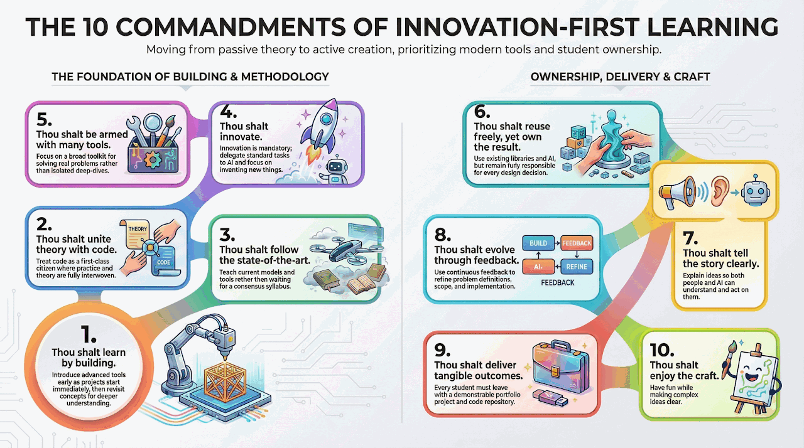

CS Degree Curriculum Design
As Head of the Software Engineering track at HIT, I developed a new CS curriculum proposal centered on Innovation-First Learning principles.
I designed these initiatives to align CS education with current AI practice and graduate readiness, drawing on three decades of industry experience and is grounded in the Innovation-First Learning methodology, which shapes the Hands-on AI Science course series.
As Head of the Software Engineering track at HIT, I developed a new CS curriculum proposal centered on Innovation-First Learning principles.

I established and led an industry advisory board to define practical readiness profiles for graduate roles, including AI engineer and full-stack developer tracks.

Innovation-First Learning bridges traditional CS education and current AI practice through deep theory, modern tools, and project work.
Full Approach